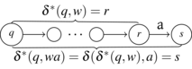
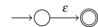
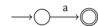
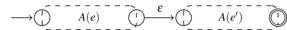
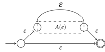
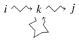
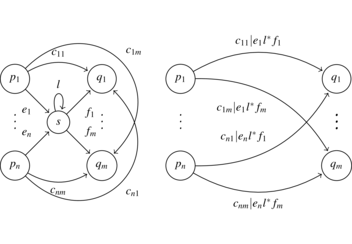

Langages réguliers et automates finis - Fiche

AFD
- un seul état initial
- pas de choix : si \(q \xrightarrow{a} q'\) et \(q \xrightarrow{a} q'\) alors \(q' = q''\)
AFND : plusieurs états initiaux et choix
AFND\(\epsilon\) : un seul état initial, choix et transitions spontanées \(q \xrightarrow{\epsilon} q'\)
complet : toutes les transitions \(\forall q \in Q, \forall a \in \Sigma, \exists q', q \xrightarrow{a} q'\)
émondé : \(\forall q, i \leadsto q \leadsto f\)
\(A = (\Sigma,Q,\delta,I,F) \Rightarrow A'=(\Sigma,\mathcal{P}(Q),\delta',I,F')\)
\(\delta'(E,a) = \bigcup_{q \in E} \delta(q, a)\)
\(F' = \enscomp{E \subset Q}{E \cap F \neq \emptyset}\)
\(\scriptsize \begin{array}{rr|c|c} & q & a & b \\ \hline \rightarrow * & \{ 1, 2 \} = A & B & C \\ * & \{2, 3 \} = B & D & C \\ * & \{1, 3 \} = C & B & E \\ * & \{ 2 \} = D & \emptyset & C \\ * & \{ 3 \} = E & D & \emptyset \end{array}\)
\(\delta^*(q,\epsilon) = \overline{q} \quad \delta^*(q,wa) = \overline{\bigcup_{q' \in \delta^*(q,w)} \delta(q',a)}\)
\(\delta'(q,a) = \overline{\delta(q,a)} \quad q \in F' \iff \overline{q} \cap F \neq \emptyset\)
Soit \(L\) un langage sur \(\Sigma\). Si pour tout \(n \in \N\), il existe \(w \in L\) tel que \(|w| \ge n\) et que pour tout \(x, y, z \in \Sigma^*\) tels que \(w = x y z\), \(y \neq \epsilon\) et \(|xy| \le n\) il existe \(k \in \N\) avec \(x y^k z \not\in L\), alors \(L\) n’est pas régulier.
AFD \(\delta : Q \times \Sigma \rightarrow Q\) partielle
\((q, a) \in \dom(\delta) \iff q \xrightarrow{a} \delta(q,a)\)
AFND \(\delta : Q \times \Sigma \rightarrow \mathcal{P}(Q)\)
AFND\(\epsilon\) \(\delta : Q \times (\Sigma \cup \{ \epsilon \}) \rightarrow \mathcal{P}(Q)\)
transition spontanée \(q \xrightarrow{\epsilon} q'\)
AFD \(q_0 \xrightarrow{a_1} q_1 \dots \xrightarrow{a_n} q_n \Rightarrow \delta^*(q_0,a_1\dots a_n) = q_n\)

\(\delta^*(q,\epsilon) = q\qquad w \in \mathop{lang}(A) \iff \delta^*(i, w) \in F\)
AFND \(q_0 \xrightarrow{a_1} q_1 \dots \xrightarrow{a_n} q_n \Rightarrow q_n \in \delta^*(q_0,a_1\dots a_n)\)
\(\delta^*(q,wa) = \bigcup_{q' \in \delta^*(q,w)} \delta(q',a)\)
\(\delta^*(q,\epsilon) \{ q\}\)
\(w \in \mathop{lang}(A) \iff \left(\bigcup_{i \in I} \delta^*(i, w)\right) \cap F\neq \emptyset\)
\(A(\emptyset) =\) \(\quad A(\epsilon) =\) 
\(\forall a \in \Sigma, A(a) =\) 
\(A(ee') =\) 
\(A(e|e') =\) 
\(A(e^*) =\) 
régulier dénoté par une expression régulière rationnel = reconnaissable par un AFD
Th : Langage régulier ssi reconnaissable par un AFD
\(L\) local ssi \(\exists P, S \subset \Sigma, N \subset \Sigma^2,\)
\(L\backslash \{\epsilon\} = (P \Sigma^* \cap \Sigma^* S) \backslash \Sigma^* N \Sigma^*\)
\(P = \enscomp{a \in \Sigma}{\exists w \in \Sigma^*, aw \in L}\)
\(S = \enscomp{a \in \Sigma}{\exists w \in \Sigma^*, wa \in L}\)
\(\overline{N} = \enscomp{ab \in \Sigma^2}{\exists w,v \in \Sigma^*, wabv \in L}\)
automate local: Si \(q \xrightarrow{a} q_1\) et \(q' \xrightarrow{a} q_2\) alors \(q_1 = q_2\).
langage local \(\iff\) reconnu par automate local.
Si \(P,S,N\) définis \(A = (\Sigma, \Sigma \cup \{\epsilon\}, \delta, \epsilon, S')\)
\(S' =\begin{cases} S & \text{si } \epsilon \not\in L \\ S \cup \{\epsilon\}& \text{sinon} \end{cases}\)
\(\forall a \in P, \delta(\epsilon, a) = a\) \(\forall a, b \in \Sigma, ab \not\in N \Rightarrow \delta(a,b) = b\)
Regexp linéaire : au plus une fois chaque lettre.
linéarisation : \(a(a|b)cb^*a \Rightarrow a_1(a_2|b_1)cb_2^*a_3\)
Regexp linéaire \(e \Rightarrow \mathop{lang}(e)\) local.
\(accv(\emptyset) = \perp \quad \forall a \in \Sigma, accv(a) = \perp\)
\(accv(\epsilon) =\top \quad accv(e^*) = \top\)
\(accv(e_1|e_2) = accv(e_1) \vee accv(e_2)\)
\(accv(e_1 e_2) = accv(e_1) \wedge accv(e_2)\)
\(P(\emptyset) = \emptyset \quad \forall a \in \Sigma, P(a) = \{a\}\)
\(P(\epsilon) =\emptyset \quad P(e^*) = P(e)\)
\(P(e_1|e_2) = P(e_1) \cup P(e_2)\)
\(P(e_1 e_2) = \begin{cases} P(e_1) \cup P(e_2) & \text{si } accv(e_1) \\ P(e_1) & \text{sinon} \end{cases}\)
\(S(\emptyset) = \emptyset \quad \forall a \in \Sigma, S(a) = \{a\}\)
\(S(\epsilon) =\emptyset \quad S(e^*) = S(e)\)
\(S(e_1|e_2) = S(e_1) \cup S(e_2)\)
\(S(e_1 e_2) = \begin{cases} S(e_1) \cup S(e_2) & \text{si } accv(e_2) \\ S(e_2) & \text{sinon} \end{cases}\)
\(N(\emptyset) = N(\epsilon) = \Sigma^2 \quad \forall a\in \Sigma, N(a) = \Sigma^2\)
\(N(e^*) = N(e) \backslash S(e)P(e)\)
\(N(e_1|e_2) = N(e_1) \cap N(e_2)\)
\(N(e_1 e_2) = (N(e_1) \cap N(e_2)) \backslash S(e_1) P(e_2)\)
\(Q = \range{1}{n}\)
\(R^{(k)}_{ij} =\) expression régulière dénotant les étiq \(i \leadsto j\) transitant par \(\ge k\).
\(R^{(0)}_{ii} = \epsilon\) si \(i \not\rightarrow i \qquad R^{(0)}_{ii} = \epsilon | a_1 | \dots | a_p\) si \(i \xrightarrow{a_k} i\)
\(i \neq j, R^{(0)}_{ij} = \emptyset\) si \(i \not\rightarrow j \quad R^{(0)}_{ij} = a_1 | \dots | a_p\) si \(i \xrightarrow{a_k} j\)

\(R^{(k)}_{ij} = R^{(k-1)}_{ij} | R^{(k-1)}_{ik} \left(R^{(k-1)}_{kk}\right)^* R^{(k-1)}_{kj}\)
Si \(i\) initial et \(f_1, \dots, f_p\) finaux :
\(R^{(n)}_{i f_1} | \dots | R^{(n)}_{i f_p}\)
EX-AF(N)D : automates avec des expressions régulières comme étiquettes.
Élimination de \(s\):

On aboutit sur :
Expression régulière associée : \((e_i | e e_f^* e')^* e e_f^*\)
 Marc de Falco
Marc de Falco